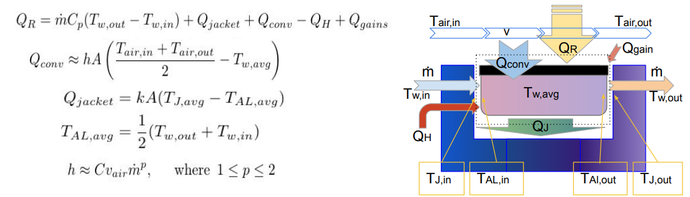

Targeting Algorithm for Bag Dispenses
Project Goals
- Predict how a stock item would fall into a bag given its physical properties and dispense speed.
- Find ways to avoid item collisions with each other or with bag walls.
- Implement an efficient instance of the algorithm to be run in less than 10ms.
Empirical Data Collection
A dozen items were dispensed at different speeds and heights and the landing distance was recorded each time. This was done into a granular media to absorb the impact energy.
Each item was weighed then placed on a custom torsional pendulum to determine its specific moment of inertia.
Tracking the motion of a pasta box as it falls into a granular media.
Using a 3D printed torsional pendulum to measure moments of inertia of items.
A red bull can dispensed at a lower speed shows more pronounced slipping.
Developing a Physics Model
Every dispense problem was abstracted to a rectangle rolling off the edge of a spinning disk, with the exception of spherical items.
Composed of both a static and kinetic friction regime, the model accounted for stick-slip interaction between the item and the conveyor.
Dynamic equations were derived through the use of Lagrangian mechanics.

An FBD of a prismatic object being dispensed at a constant speed.
Static friction and kinetic friction regime dynamics.
Model Verification with Simulations
The physics model above was verified in 4 different ways:
- SolidWorks Motion Studio
- Python numerical integration using Scipy
- MuJoCo toolbox and URDF descriptions
- Direct comparison against empirical data
Chaotic behavior was detected through the use of bifurcation diagrams and varying theoretical friction coefficient values.
There was strong agreement between the model and data, but liquid containers showed the most deviation from theory.
Using MuJoCo to test virtual dispenses and compare to analytical solutions.
Verifying a Python probabilistic physics model against empirical data.
Checking model continuity, also notice the bifurcation at low friction values.
Timing Belt Joining Bead
Project Goals
- Design a compact joining bead for use with rubber-coated nylon rope, for both ambient and freezing temperatures.
- Increase joining bead tensile strength from 15kg to 30kg to improve component lifetime.
- Reduce manufacturing and assembly costs through an in-house additive manufacturing approach.
Assessment
Reasons for component failure:
- Set screws used to hold the ends together inside the joining bead would instigate fractures under high tensile loads.
- The inner nylon cord would slip inside the polyurethane sheath.
- Adhesion surface area was too small due to space constraints.
Cracking due to temperature-induced stresses and cyclic fatigue.
Using set screws as crimps - 100N capacity.
Iterative Design
Concept # 1: Using set screws to fasten against the belt ends, but this failed due to adhesion limits.
Concept # 2: Using internal capstan friction by way of wrapping the cord ends inside the bead, but this too failed due to layer separation.
Concept # 3: Relying on bolt compression against the internal bead walls to compensate for the cord's elastic deformation under tension.
Using capstan friction - 150N capacity.
Using bolt compression and hoop stress - 220N capacity.
Conclusion
The bead lifetime exceeded 4 months of continuous operation in freezing temperatures, marking a ~300% improvement.
Hot Knife Apparatus
Project Summary
There was a need to add chamfers to 3000 injection molded tongue pins without ordering an additional mold, and a hot knife jig was discovered to be the most efficient tool for the job.
Apparatus Description
Precision: the plastic part is located underneath the blade with metal dowel pins.
Ergonomics: a lever allows the operator to adjust blade temperature and cutting speeds in a single stroke.
Efficiency: a metal brush makes the knife self-cleaning and ready for the next cut.
Safety: a blade guard keeps fingers out and a blower fan diverts toxic gasses away from eyes.
The benchtop-mounted hot knife jig is equipped with a fan to divert toxic fumes.

Lowering the handle triggers the hot knife and heats up the blade as it sinks into the platic part.
Raising the handle causes the blade to clean itself of plastic residue against the metal brush.
Air Intake Control PCB
The disclosure of the following information has been curated and approved by Mesodyne Inc.
Problem Statement
To develop a miniature blower module that sustains propane combustion within a LightCell power generation unit.
Iterations and Prototyping
Three different controllers were used in the prototyping stage: Arduino Due, Adafruit nRF52, and the Arduino Nano.
A Sensirion flow meter provided feedback for PID flow rate control.
Each iteration slowly reduced overall power requirements from 48W to 7W through improved blower selection and more efficient air flow paths.
First Arduino Nano-based PCB with integrated motor drivers and ADCs.

Combining the blower fan, motor driver, control circuit, and digital flow sensor.
Testing component compatibility with an Arduino Mega shield.

Control board version 2 uses an embedded STM32 chip. The banana is for scale.
Final PCB and Testing
The final PCB was built around the STM32F07 family of MCUs due to their accessibility. Onboard are the following components.
- Thermocouple amplifiers for temperature sensing.
- Analog-to-digital converters for thermistors.
- 32MB of flash memory for data collection.
- Power MOSFETS for turning on 12V systems.
- Motor driver for the blower.
- I2C, SCL, and ST-LINK communication lines.
A major challenge was to subdue turbulent fluctuations in airflow right after ignition, casued by rapid thermal heating and acoustic resonance. A combination of PID tuning and acoustic dampening was used to achieve stability.

Turbulent flow rates transition into a steady stream following ignition.
Thermal Emissions Calorimeter
The disclosure of the following information has been curated and approved by Mesodyne Inc.
Project Goals
- Our benchtop burner needed a device to measure radiative heat with an accuracy of 5W.
- A calorimeter with a high-absorptivity coating was proposed to transfer all blackbody radiation into the thermal fluid.
Design Methodology
- Ice water is used as the thermal fluid to maintain a low operating temperatures.
- A cooling jacket insulates the calorimeter from convective losses to the atmosphere and provides a predictable boundary condition.
- High-precision thermistors are used to measure temperatures witin 0.01 degrees Celsius.

Showing a cross-section and assembly view of the calorimeter.
Showing internal fluid channels underneath the radiation collector.
Construction
The fluid system use a single centrifugal pump to provide variable flow rates for both the cooling jacket and collector.
Cooling channels in the collector block were 5-axis machined out of aluminium.
An SLS 3D printed cooling jacket enshrouded 5 out of 6 sides of the collector for maximum insulation.
Quick hose disconnects and bubble vents allowed for rapid apparatus setup.

Fluid diagram representing the layout of valves, pumps, gauges, and reservoirs.
The water pump cart on the left, the calorimeter apparatus on the right.
Data Analysis
Multi-linear regression was used to separate out conductive and convective heat gains in order to find the final radiative heat value.
Model accounts for a total of 6 temperature measurements, 1 heat control, and 2 flow rate controls.

Developing the governing heat equation.
Visual representation of the calorimeter calibration procedure.
Flexure Stage for Optical Posts
Design Requirements
- To alleviate one translational degree of freedom on a vacuum flange, but simultaneously constrain the other 5.
- Withstand a vertical load of 100 N.
- Compatible with optical breadboards and easy to install/adjust.
Design Approach
Applying the leaf flexure formula to calculate the total elasticity of the flexure as a function of length, width, and thickness.
The optimal dimensions were found by parameter searching over these discrete variables and checking with the machinists.
Showing the translational degree of compliance.
Poor approach: using a plastic jig in a bench vise to drill through individual springs.
Machining
The aluminium connectors were machined using the advanced cut-to-size-then-drill-some-holes fabrication technique. The leaf flexures on the other hand were the most labor intensive to machine. Spring steel is way less forgiving than aluminum when it comes to drilling holes.

Successful approach: using a mill and sacrificial material to drill through the spring steel.
Final Result
We discovered a minor issue where the thumb screws could not clamp down with enough force when hand tightened, but this was fixed by replacing them with socket head screws, and inserting grip washers in between the aluminum components.

The flexure stage attached to the vacuum flange and mounted on an optical table.
Automatic Cat Feeder

Feed me hooman!
Description
While on vacation for a few days, I needed a way to keep our cat fed on a daily basis. I decided to quickly fabricate a cat feeder out of materials I found in my garage. The idea was to use a rotating disk and an equally-compartmentalized cylinder. Each compartment holds a cat's daily ration of food, and every 24 hours, the disk rotates into position under that compartment to let the food fall through by its own weight. This contraption would be mounted above the cat bowl.

Brainstorming and sketching
Design & Fabrication
After an initial round of brainstorming, I modeled the idea in SolidWorks, making sure to size the components according to the stepper motors and pieces I already had on hand. The rotating disk would be secured by the screw-on lid of the plastic container, and all sliding surfaces would be lubricated to prevent them from seizing up.

3D SolidWorks model with its section view showing how the rotating components are secured (using ball bearings and plastic bushings)
For the axle which connects the large gear to the disk I used a wooden dowel on which I press fit everything else (and sanded it where it needed to rotate freely). I also 3D printed the two gears which increased the torque from the motor.

Testing the prototype
The final step was to put the prototype to the test. The house was cold during our departure, so although the stepper motor heated up to around 120 degrees Fahrenheit due to several days of powered use, it didn't burn out in the end.
Results
When we came back the cat was still alive and happy! (although perhaps a bit chubbier)
Junior Machining Projects
I have been working as a Junior Machinist at the Forsyth machine shop on Northeastern's campus since the spring of 2021. Here are a few projects during which I have employed most of my machining knowledge and learned more.
Aesthetic Spinning Top
The idea was to make a top which would make a satisfying desk toy but also demonstrate the possibility of joining multiple material types into a solid object. As an increased hardness of the point of contact leads to decreased frictional losses, a stainless steel core was used, while a brass exterior provided the aesthetic. Press-fitting the two cylinders together was a process of trial and error. Initially, they were simply pressed together using a bench press with no thermal processing and this resulted in unfavorable cavities to form in between the steel and brass pieces. Later, with the second attempt, the brass piece was heated up with a blowtorch while the steel was cooled with liquid nitrogen. This allowed the former to expand and the latter to contract, resulting in much tighter tolerances at room temperature.

Top in spinning position
Benchtop 2-in-1 Toolpost
When inserting a cutting tool in a 5C collet (used on the Tormach mills), the collet needs to be secured in place while a torque wrench is used to tighten it properly. The challenge was to design a toolholder to hold 2 different collet sizes as to economize for space on the worktable.
Designing the toolholder by sketching. A requirement is to accomodate 2 different collet sizes.
The 1/4 in steel pieces were first water-jet, then press fit, and then welded together. The difficulty was finding the right tolerances for the tab and slot features, but this was solved after two iterations.

Toolholder mounted on a worktable
In the end, this in-house solution performed better and more reliably than Tormach's collet closers. This project is open source, and the part/DXF files can be found here.
Self-balancing inverted pendulum
See a demo video of this project in action.
Project Summary
- I wanted to make a self-balancing inverted pendulum on a cart machine because it would be so cool
- With this project I learned the basics of machining, tolerances, power budgeting, and electronics
- Computer simulations and rapid prototyping were used to design a flexure-based linear slide
- Used Simulink and knowledge of classic control theory to design a Raspberry-Pi based PID controller
Motivation
This project first started at an engineering summer camp taught by MIT Professor Alex Slocum where we were instructed to find a problem and apply the FUNDAMENTAL principles of design to the entire process. This project grew into a larger robotics endeavor where I learned PID control algorithms, electronics, machining, prototyping, flexure design, and acquired many more analytical skills.
Description
An inverted pendulum is an inherently unstable system because gravity is not a restoring force but an applied force that coerces the pendulum to a stabler equilibrium (where it is hanging like a normal pendulum). To keep the pendulum in equilibrium, a restoring force must be applied. One way to do this is by accelerating the pendulum's reference frame and making use of Newton's 2nd law, "F=ma". Using only one degree of freedom, the falling mass may be kept in its original position despite external disturbances which may cause perturbations. There are many YouTube videos featuring these types of machines and how they work.
Functional Requirements
To fit on a bench-top, the linear stage needed to lay horizontal, and it required a sliding carriage on which to secure the pendulum mechanism. For coolness points, the pendulum had to carry an object up to 1kg in mass while in balance. This meant that the pendulum assembly had to be rigid enough to withstand the load, and the DC motor powerful enough to accelerate the pendulum to the necessary velocities. This also meant that the linear stage needed to be long enough to allow for large displacements of the pendulum base in case it needed to decelerate gradually. The mathematical model for the inverted-pendulum system is simple but it is also highly nonlinear, so sensing and feedback loop control is required to keep it at a constant angle.

Using a Python script and physics simulation to approximate the maximum power draw of the motor.
Limitations
The main limiting factor was my budget. I didn't want to spend more than $300 on the entire assembly so only the most essential precision components were purchased from McMaster-Carr. This included the precision ground steel rods and the teflon bearings which were cheaper than regular ball bearings. With no initial machining/engineering experience, the first attempts lacked the necessary precision tolerances. This lack was compensated for through the use of built-in flexures on the rail carriage. Another limitation was physical space. This was a machine which needed to be portable and take up little space on the bench-top, but also be large enough to handle with normal garage tools. Finally, it needed to be safe enough to poke with a finger (and demonstrate internal perturbations), so safety measures had to be integrated into the design as well.
Brainstorming and Design
The first step was to sketch ideas and think of all the possible ways to satisfy the functional requirements within the limitations. The options were narrowed down once a few bench-top models were whipped up using LEGO technic pieces. Afterwards, the next stage was to CAD model everything in SolidWorks and Fusion 360, and further simplify the design while making sure to consult with peers. The final design concept was kept throughout the building stage, only the individual component layout and structure changed dramatically. Consider the evolution from 2018 to 2021 shown in the images below.

Fusion 360 assembly showing initial design (2018).

SolidWorks assembly showing final design (2022).
Component: Flexured Carriage
A large issue during the building and design phase was that the components used are tight tolerances and any displacement causes enormous stresses that bind up the carriage motion. Therefore, mechanical flexures, are used to decrease the spring constant of various motion components and reduce the stresses caused by load-induced strains. I kept an engineering notebook all along to record my progress and figure out formulas.

Figuring out the tolerances in the linear carriage, and the optimal flexure design to accommodate them.
The most important flexures on the machine are ones which hold the linear bearings in place and are attached to the carriage body. The flexures account for misalignment errors of the two rods relative to each other, as well as how the carriage blocks are attached to the carriage chassis.

Running FEM simulations on various bearing mount flexure designs to determine the smallest and most effective form factor.
Initially these were to be water-jetted out of aluminum bar stock, but the more economical choice of 3D printing them won out in the end.
Another important flexure in the carriage assembly is the carriage chassis itself which compensates for the vertical misalignment of the two carriage blocks. Because of the limitations of how the bearing flexures are able to bend, this flexure-based chassis makes up for the lost degree of freedom.

Running simulations on the carriage chassis flexure to find the optimal tab width.
This piece was cut out of 1/8 inch low-carbon steel on an OMAX water-jet cutter.

Installing the flexure-based chassis.
Component: Belt Tensioner
There had been a couple iterations for the belt tensioner which would pull the two ends of the timing belt together and also be secured in a recess of the linear carriage. The first design involved a plate which would pull down a small belt section which interlocked with the two loose ends and pulled them towards the center. This worked fine until the belt section gradually deformed and loosened up, thereby losing its tension.

Designing and installing the first belt tensioner.
The second belt tensioner was build out of aluminum stock and steel bolts so that it would be capable of applying much larger tensions with minimal installation work. This required lots of manual machining and failures (wrong speeds/feeds, broken tap, insufficient tolerancing, etc.), but in the end it came out great.

The new and improved belt tensioner.
Results
As of now, the linear stage is up and running. There is a PID loop running through an Arduino-Uno which takes in encoder data from the motor and adjusts the motor input voltage accordingly. The motor that is used is a VEX Mini Cim motor, and the motor controller is a Talon SPX. You can see a video of the linear stage being controlled by a potentiometer position.
In the near future I hope to get the pendulum installed and another feedback loop running through the Arduino to monitor its angular position. Then I will be able to control the pendulum setting a position and letting the machine balance itself!